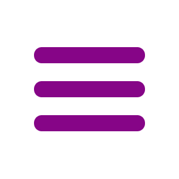

  <nav class="navbar px-md-5 py-0 w-100 position-absolute top-0 start-0" style="z-index: 500;height:118px;">
    <div class="container-fluid">
      <a class="navbar-brand" routerLink="/inicio">
        
      </a>
      <div>
        <span *ngTemplateOutlet="menu"></span>
      </div>
    </div>
  </nav>

  <mat-drawer-container id="menuLateral" (click)="changeMenu(drawer)" class="w-100 h-100 position-absolute" style="background-color: rgba(255, 255, 255, 0.5);z-index: 900;" [ngClass]="{'ocultarMenu' : !showFiller}" autosize>
    <mat-drawer #drawer style="width:250px;" [style]="{'background-color':config.backgroundMenu}" mode="side" (click)="changeMenu(drawer)">
      <div  class="mt-4 px-2 d-flex justify-content-center">
        <h3 *ngIf="showFiller" class="fw-bold fs-3 mt-2 ms-5 me-4 ps-4" [ngClass]="config.textColorDarkClass">MENÚ</h3>
        <span (click)="changeMenu(drawer)" role="button" *ngTemplateOutlet="menu"></span>
      </div>
      
      <!-- Items del menú -->
      <div class="mt-4 ps-4">
        <a (click)="changeMenu(drawer)" class="nav-link fs-5" [style]="{'color':config.baseColorLight}" routerLink="/inicio" [routerLinkActive]="config.textColorClass">Inicio</a>
        <a (click)="changeMenu(drawer)" class="nav-link fs-5 mt-4" [style]="{'color':config.baseColorLight}" routerLink="/admin" [routerLinkActive]="config.textColorClass" *ngIf="config.userToken !== '' && config.userRol === 'ADMIN'">Administración</a>
        <a (click)="changeMenu(drawer)" class="nav-link fs-5 mt-4" [style]="{'color':config.baseColorLight}" routerLink="/tarjetas" [routerLinkActive]="config.textColorClass" *ngIf="config.userToken !== '' && config.userRol === 'USER'">Mis Tarjetas</a>
        <a (click)="changeMenu(drawer,'containerServicios')" class="nav-link fs-5 mt-4" role="button" [style]="{'color':config.baseColorLight}">Servicios</a>
        <a (click)="changeMenu(drawer,'containerMetodosPago')" class="nav-link fs-5 mt-4" role="button" [style]="{'color':config.baseColorLight}">Métodos de Pago</a>
        <a (click)="changeMenu(drawer,'containerUbicacion')" class="nav-link fs-5 mt-4" role="button" [style]="{'color':config.baseColorLight}">Ubicación</a>
        <a (click)="changeMenu(drawer,'containerInformacionGeneral')" class="nav-link fs-5 mt-4" role="button" [style]="{'color':config.baseColorLight}">Contacto y Horarios</a>
        <a (click)="changeMenu(drawer,'containerBeneficios')" class="nav-link fs-5 mt-4" role="button" [style]="{'color':config.baseColorLight}">Beneficios</a>
      </div>

      <span *ngTemplateOutlet="login"></span>

    </mat-drawer>  
  </mat-drawer-container>


<ng-template #login>
  <button mat-raised-button color="primary" class="position-absolute bottom-0 end-0 translate-middle" [routerLink]="(config.userToken == '' || config.userToken == null) ? '/iniciar-sesion' : ''" (click)="(config.userToken == '' || config.userToken == null) ? changeMenu(drawer) : cerrarSesion()"><span *ngIf="config.userToken == '' || config.userToken == null">Iniciar Sesión</span><span *ngIf="config.userToken != '' && config.userToken != null">Cerrar Sesión</span></button>
</ng-template>

<ng-template #menu>
  
</ng-template>

<router-outlet></router-outlet>